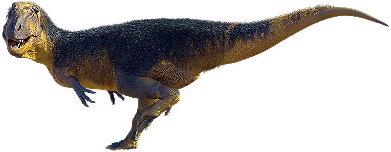
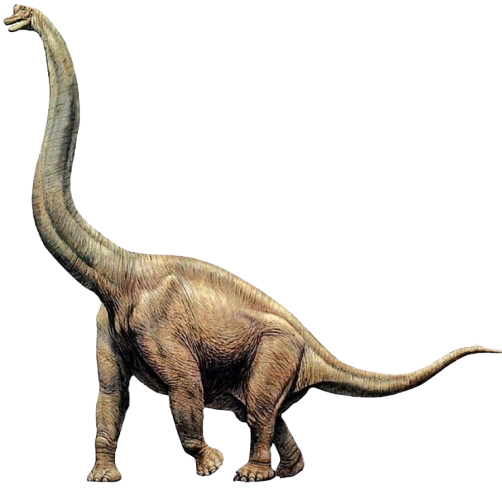
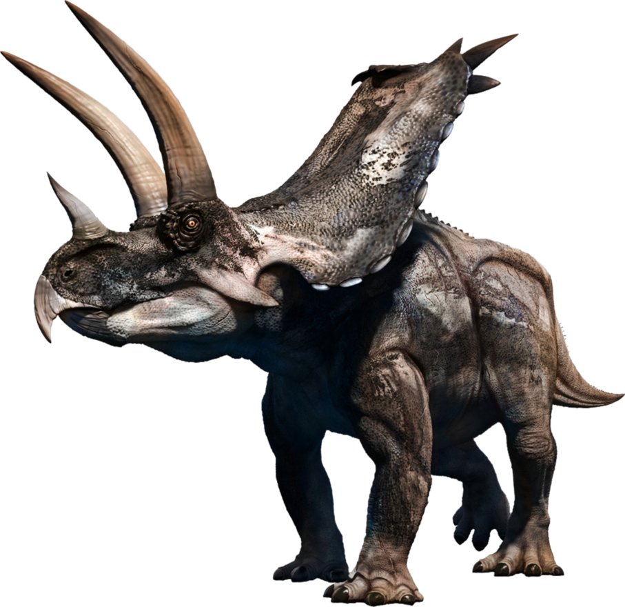
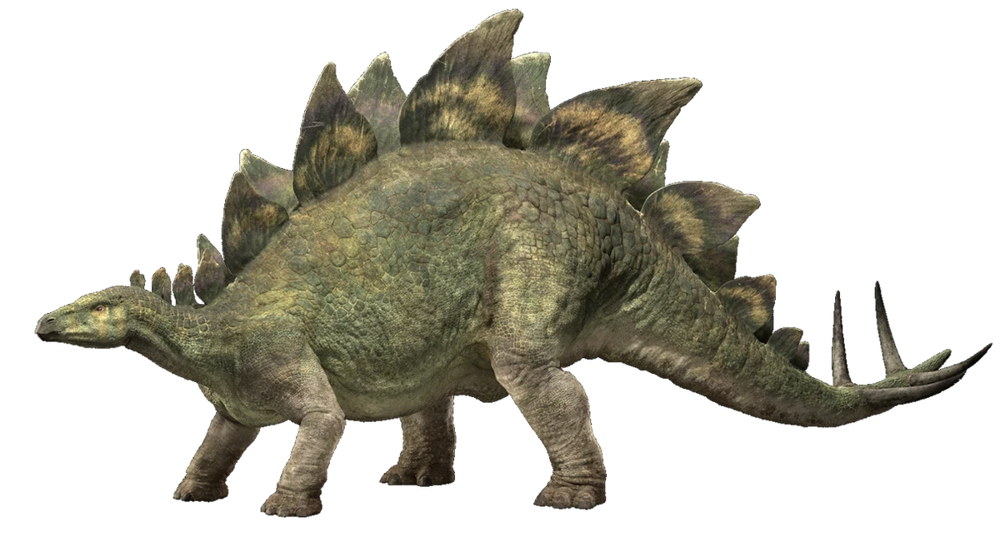
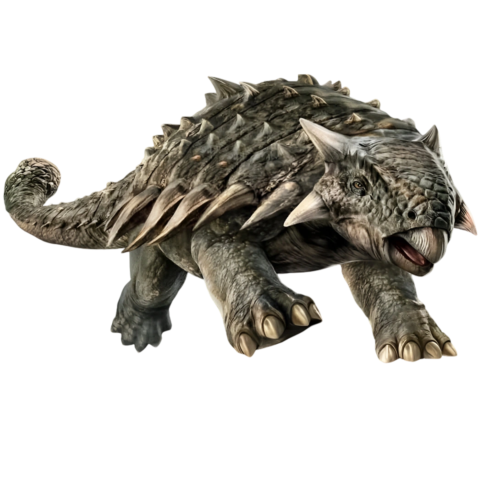
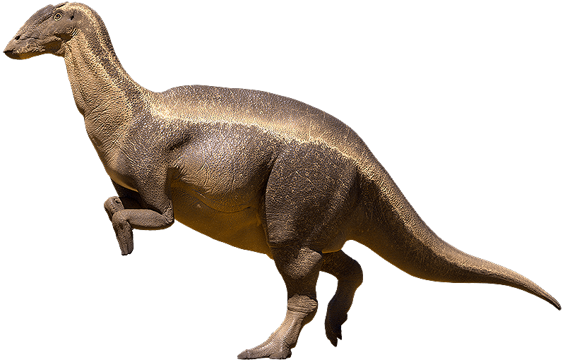

For an incomprehensible 165 million years, the Earth was a vast, unbroken kingdom of dinosaurs, and the reality of their existence was far stranger and more spectacular than most people realize. The Mesozoic Era wasn't just a bleak landscape of gray rocks and fighting monsters; it was a vibrant, breathing ecosystem teeming with life. You had the sauropods, like the colossal Argentinosaurus, which were essentially walking skyscrapers that stripped entire canopies of leaves just to fuel their massive bodies. But then you had the other end of the spectrum—nimble, pack-hunting theropods with hollow bones and bodies covered in complex, iridescent plumage, looking more like giant, lethal birds of prey than overgrown lizards. They evolved bizarre crests for communication, thick armor plates for defense, and sickle-shaped claws for hunting, dominating every ecological niche from the sweltering supercontinents to the ancient polar forests where it actually snowed.
Their reign was violently interrupted about 66 million years ago when a city-sized asteroid slammed into what is now the Yucatan Peninsula, triggering a cataclysm of tsunamis, wildfires, and a suffocating global winter that wiped out roughly 75 percent of all life on Earth. The sheer scale of the devastation abruptly ended the era of the giant non-avian dinosaurs, collapsing food chains from the top down as the skies darkened and vegetation died off. Yet, the true plot twist of paleontology is that they didn't completely vanish. A specific lineage of small, feathered, warm-blooded theropods managed to survive the apocalyptic fallout by sheltering, scavenging, and adapting to the harsh new world. Millions of years of evolution sculpted those hardy survivors into the birds we see today. So, in a very real sense, the age of the dinosaurs never truly ended; they just traded their massive teeth and heavy tails for beaks and wings, continuing to live right outside our windows.

When you think of a scary, meat-eating dinosaur, you are thinking of a theropod. This group includes famous predators like the Tyrannosaurus rex and the Velociraptor. They walked on two legs, had hollow bones (much like modern birds), and featured jaws packed with sharp, serrated teeth designed to tear through flesh. Interestingly, this is also the group that was most heavily feathered; many smaller theropods looked a lot more like aggressive, toothed birds than the scaly lizards we usually imagine. They were fast, incredibly smart, and eventually evolved into the birds that fly around today.

These were the gentle giants of the ancient world and the largest land animals to ever exist. Dinosaurs like the Brachiosaurus and Diplodocus are famous for their impossibly long necks, long whip-like tails, and thick, pillar-like legs. Their bodies were essentially giant fermentation tanks designed to digest massive amounts of tough plant matter. Because they were so heavy, they had to walk on all fours. A fully grown sauropod was so big that it had almost no natural predators—a predator would have to be crazy to try and take down an animal the size of a four-story building.

If the dinosaur world had rhinoceroses, the ceratopsians would be it. Triceratops is the poster child for this group. They were four-legged herbivores characterized by the massive bony frills on the back of their heads and impressive facial horns. Those heavy, armored skulls weren't just for defending against hungry T-rexes; they were also likely used to show off to mates or wrestle with rivals, much like modern deer use their antlers. They also had incredibly strong, parrot-like beaks designed to snap off tough branches and vegetation.

Stegosaurs are instantly recognizable thanks to the double row of large, kite-shaped bony plates running down their backs and the menacing spikes at the end of their tails (hilariously named the "thagomizer" by scientists). Stegosaurus is the most famous example. Despite looking incredibly tough, they had incredibly tiny heads and brains roughly the size of a walnut. Paleontologists still debate what the plates were for—some think they acted like solar panels to help warm up their blood, while others believe they were brightly colored to intimidate predators or attract mates.

These were the ultimate biological tanks. Ankylosaurs were wide, squat, four-legged herbivores that were almost entirely covered in thick, bony armor plates (called osteoderms) fused directly to their skin. Some even had armored eyelids! The most famous, like the Ankylosaurus, carried a massive, bony club at the end of their tail. If a predator got too close, an ankylosaur could swing that tail club with enough force to shatter the leg bones of even the largest carnivorous dinosaurs.

Often referred to as the "cows of the Cretaceous," ornithopods like Parasaurolophus and Edmontosaurus were incredibly successful herbivores that roamed in massive herds. They are famous for their "duck-billed" snouts, which were packed with hundreds of tightly arranged teeth perfectly designed for grinding up tough plants. What makes them truly fascinating, though, is their communication. Many of them had elaborate, hollow bony crests on top of their heads that connected to their nasal passages. When they breathed out, these crests acted like biological trombones, allowing them to honk and trumpet loudly across the prehistoric plains.